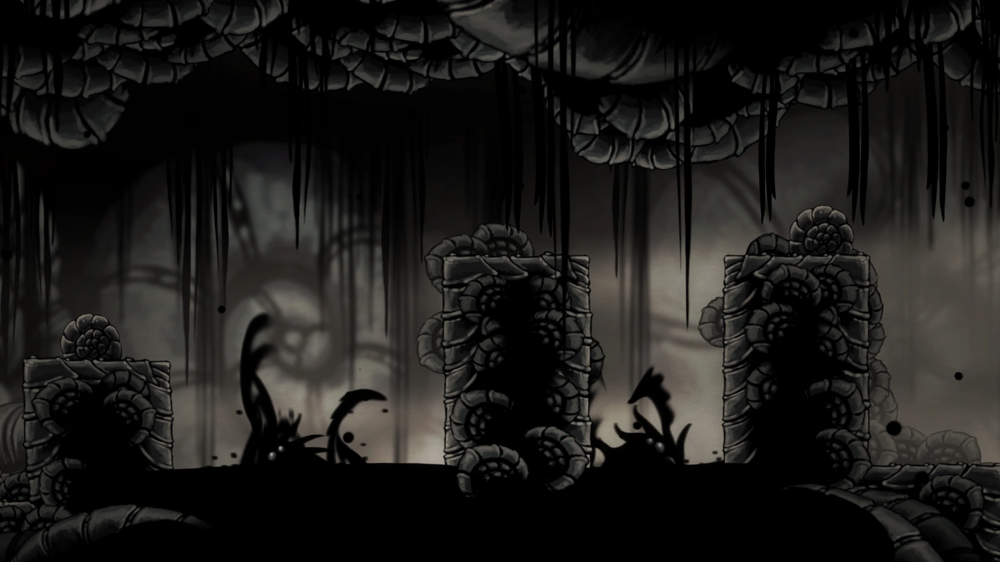
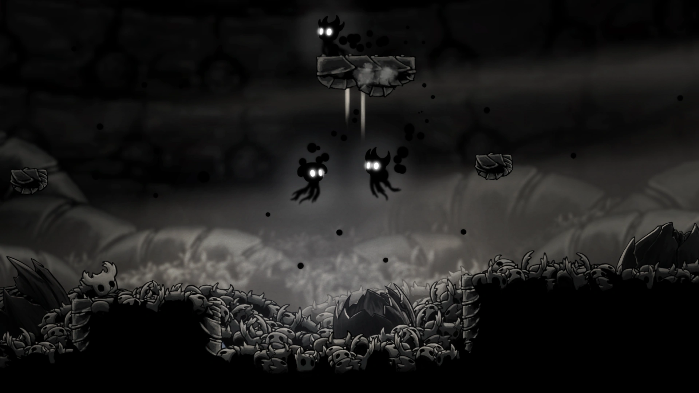

El Vacío

La Fuerza que Existió Antes
El Vacío es una fuerza elemental y líquida que reside en lo más profundo de Hallownest, en un área conocida como El Abismo. Es la antítesis de la Luz de Destello. Mientras que la Luz busca la unidad a través de la mente y la infección, el Vacío es una oscuridad sin forma, sin mente y sin voluntad, capaz de consumir incluso a los dioses más poderosos.
"Vacío... una oscuridad que respira. Un silencio que grita. El Rey intentó dominarlo, pero el Vacío solo puede ser unificado, nunca controlado."
La Creación de las Vasijas
Para contener la Infección, el Rey Pálido utilizó el Vacío para crear a sus hijos: los Receptáculos. Estos seres fueron engendrados por el Rey y la Dama Blanca, pero sus huevos fueron arrojados al Abismo para que el Vacío filtrara su interior, eliminando cualquier rastro de mente o emoción.
"Sin costo demasiado grande"
Millones de hermanos del Caballero murieron en el proceso. Sus restos forman el suelo de huesos que pisas en el Abismo. Solo uno fue considerado el "Receptáculo Puro".

El Corazón del Vacío (Void Heart)
Este es el amuleto más importante del lore. Se obtiene al final del lugar de nacimiento del Caballero. Al obtenerlo, el Caballero ya no es un extraño en el Vacío, sino su Señor. Todas las sombras (Siblings) dejan de atacarte y se vuelven parte de ti.
"Unifica el vacío bajo la voluntad del portador. No puede ser desequipado."
Este objeto es la clave para derrotar a Destello. Permite al Caballero unir el poder de todos sus hermanos caídos para arrastrar a la deidad de la luz hacia la oscuridad eterna.
El Señor de las Sombras
En el final secreto de Godmaster, el Caballero asciende a una forma divina masiva: el Señor de las Sombras (Shade Lord). Esta es la manifestación máxima del Vacío unificado. Es la entidad que finalmente destruye a Absolute Radiance, desmembrándola por completo y reclamando el trono de Hallownest como el Dios de los Dioses.